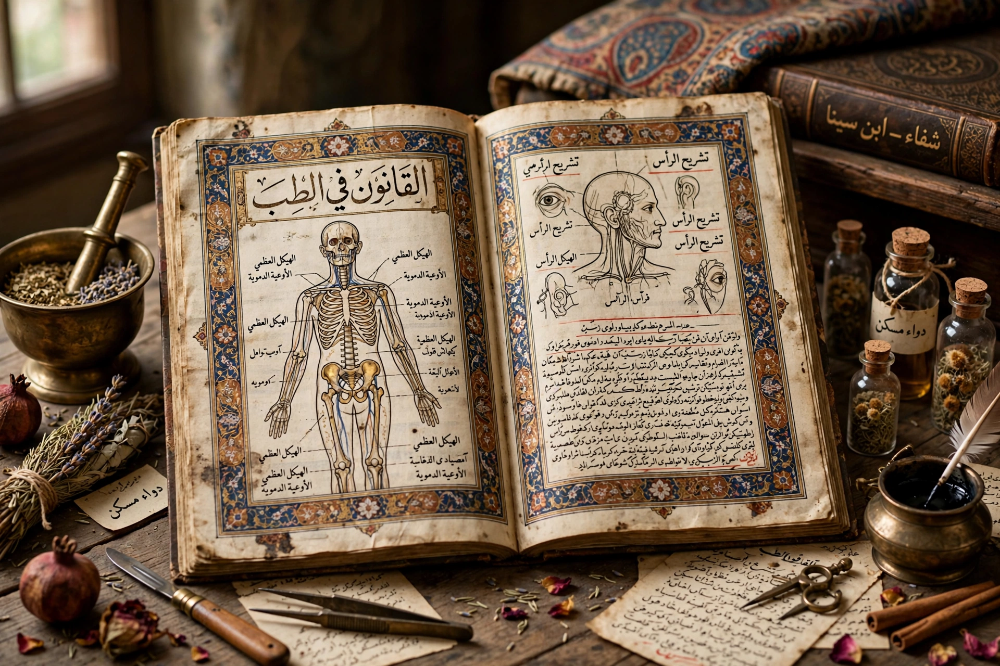

The Canon of Medicine (Arabic: القانون في الطب, al-Qānūn fī al-Ṭibb) is a five-book medical encyclopedia written in Arabic by the Persian physician-philosopher Avicenna (Ibn Sina) and completed in 1025. It systematised Greek, Roman, Indian and Persian medical knowledge and remained a standard medical textbook in Europe and the Islamic world into the 17th–18th centuries.

Book I covers general principles, anatomy and physiology; Book II lists simple drugs (materia medica); Book III covers diseases by organ; Book IV treats fevers, wounds and general conditions; Book V is a formulary of compound remedies. Avicenna described contagion, quarantine, clinical trials in embryonic form, and the distinction between mediastinitis and pleurisy, among many observations. Translated into Latin by Gerard of Cremona in the 12th century, it shaped university medicine for centuries.